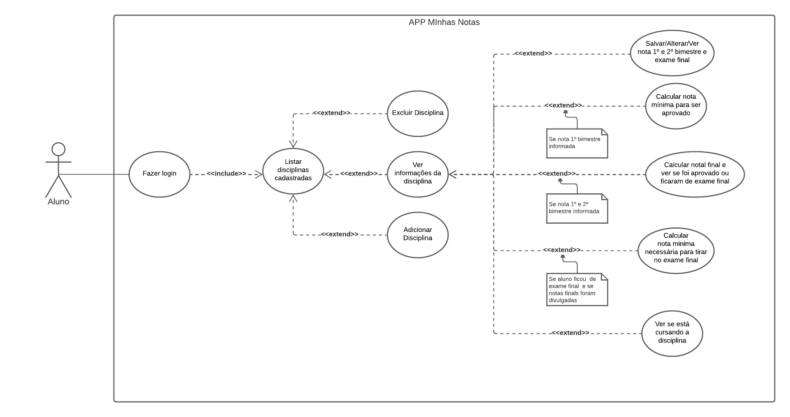

Casos de uso
Introdução
Usados para descrever um conjunto de ações (use cases – casos de uso) que um sistema ou um conjunto de sistemas (subject - sujeito) deve desempenhar em colaboração com um ou mais usuários externos ao sistema (actors - atores).
Cada caso de uso deverá prover algum resultado observável e de valor para os atores ou outros interessados do sistema.
Legenda
| Código | Significado |
|---|---|
| UC | Use Case(Caso de Uso) |
| FR | Functional Request(Requisito Funcional) |
| NFR | Not Functional Request(Requisito Não Funcional) |
Caso de uso - Geral
Especificação dos casos de uso
| UC001 - Fazer login | |
|---|---|
| Ator | Aluno |
| Resumo | O aluno deve informar nº de cadastro e senha de cadastro para conseguir fazer login |
| Pré-condições | O aluno deve informar nº de cadastro e senha de cadastro para conseguir fazer login |
| Pós-condições | O aluno deve informar nº de cadastro e senha de cadastro para conseguir fazer login |
| UC002 - Excluir disciplina | |
|---|---|
| Ator | Aluno |
| Resumo | O aluno deve informar nº de cadastro e senha de cadastro para conseguir fazer login |
| Pré-condições | Estar logado e ter pelo menos uma disciplina cadastrada |
| Pós-condições | Disciplina removida do sistema |
| UC003 - Adicionar disciplina | |
|---|---|
| Ator | Aluno |
| Resumo | Aluno pode cadastrar uma nova disciplina para visualizar no sistema |
| Pré-condições | Estar logado e informar pelo menos o nome da disciplina |
| Pós-condições | Estar logado e informar pelo menos o nome da disciplina |
| UC004 - Ver informações da disciplina | |
|---|---|
| Ator | Aluno |
| Resumo | Estar logado e informar pelo menos o nome da disciplina |
| Pré-condições | Estar logado e ter pelo menos uma disciplina cadastrada |
| Pós-condições | Ser direcionado para tela de informações da disciplina |
| UC005 - Salvar/Alterar/Ver nota 1º e 2º bimestre e exame final | |
|---|---|
| Ator | Aluno |
| Resumo | Ser direcionado para tela de informações da disciplina |
| Pré-condições | Ser direcionado para tela de informações da disciplina |
| Pós-condições | Sistema irá mostrar os dados da nota do 1º e 2º bimestre junto da nota do exame final |
| UC006 - Calcular nota mínima para ser aprovado | |
|---|---|
| Ator | Aluno |
| Resumo | Sistema irá mostrar os dados da nota do 1º e 2º bimestre junto da nota do exame final |
| Pré-condições | Estar logado, estar na tela de ver mais informações da disciplina e informado a nota do 1º bimestre |
| Pós-condições | Nota mínima para ser aprovado mostrada |
| UC007 - Calcular nota final e ver se foi aprovado ou ficaram de exame final | |
|---|---|
| Ator | Aluno |
| Resumo | Aluno pode ver se já foi aprovado na disciplina ou se ficou de exame final |
| Pré-condições | Aluno pode ver se já foi aprovado na disciplina ou se ficou de exame final |
| Pós-condições | Ver se foi aprovado ou ficou de exame final |
| UC008 - Calcular nota mínima necessária para tirar no exame final | |
|---|---|
| Ator | Aluno |
| Resumo | Aluno pode calcular a pontuação mínima que precisa tirar para ser aprovado na disciplina através do exame final |
| Pré-condições | Estar logado, estar na tela de ver mais informações da disciplina, ter informado nota do 1º e 2º bimestre, ter ficado de exame final |
| Pós-condições | Nota mínima necessária para tirar no exame final |
| UC009 - Ver se está cursando a disciplina | |
|---|---|
| Ator | Aluno |
| Resumo | Nota mínima necessária para tirar no exame final |
| Pré-condições | Estar logado e estar na tela de ver mais informações da disciplina |
| Pós-condições | Ver status se está cursando a disciplina |
Requisitos funcionais
| FR | Descrição |
|---|---|
| FR001 | Fazer login de alunos |
| FR002 | Listar disciplinas cadastradas |
| FR003 | Excluir Disciplina |
| FR004 | Adicionar Disciplina |
| FR005 | Listar dados de uma disciplina |
| FR006 | Salvar nota 1º e/ou 2º bimestre |
| FR007 | Alterar nota 1º e/ou 2º bimestre |
| FR008 | Excluir nota 1º e/ou 2º bimestre |
| FR009 | Salvar nota Exame final |
| FR010 | Alterar nota Exame fina |
| FR011 | Excluir nota Exame final |
| FR012 | Calcular nota mínima para aluno ser aprovado |
| FR013 | Calcular nota final do aluno e ver se ele foi aprovado ou ficou de exame final |
| FR014 | Calcular nota mínima que o aluno precisa tirar no exame final |
| FR015 | Mostrar se aluno está cursando a disciplina |
| FR016 | Aprovar aluno se nota do semestre >= 70 pontos |
| FR017 | Reprovar aluna se nota do semestre < 35 pontos |
| FR018 | Colocar aluno de nota final se pontuação < 70 e>= 35 |
| FR019 | Aprovar aluno que ficou de exame final se nota >= 50 pontos |
Requisitos não funcionais
| NFR | Descrição |
|---|---|
| NFR001 | Banco de dados para salvar alunos cadastrados e informações da aplicação |
| NFR002 | Paleta de cores no padrão FEPI |
| NFR003 | Ícones para cada ação que usuário pode realizar |